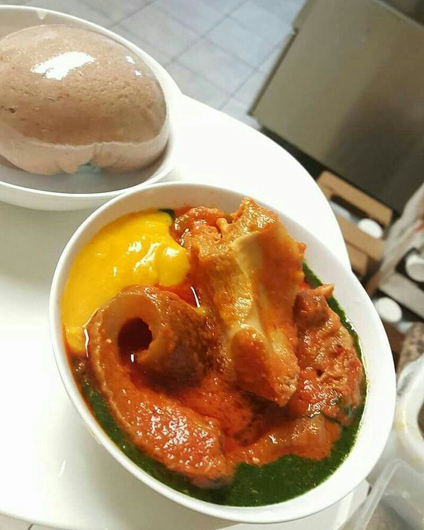

Home
Amala,Ewedu and Gbegiri

Amala, ewedu, and gbegiri is a beloved Yoruba delicacy that brings
together three distinct elements into one flavorful, hearty meal.
Amala is a smooth, stretchy swallow made from yam flour
(elubo) or plantain flour, cooked in hot water until it forms a
soft, elastic dough. Ewedu is a green soup made from
jute leaves, blended or whisked into a slippery, slightly mucilaginous
texture, and flavored with locust beans (iru), seasoning, and
sometimes ground crayfish. Gbegiri, on the other hand, is
a silky, mild-tasting soup made from peeled beans, cooked until soft and
then blended into a creamy, golden purée, often seasoned with palm oil and
spices.
When served together, these three components create a perfect harmony of
flavors and textures. The mild, earthy taste of amala pairs beautifully
with the light bitterness of ewedu and the gentle creaminess of gbegiri,
all often topped with a rich, spicy stew and assorted meats. This
combination is not just food—it's comfort and tradition on a plate, deeply
rooted in Yoruba culture. Whether enjoyed at home, in a buka (local
canteen), or during festive gatherings, amala with ewedu and gbegiri is a
meal that satisfies both the stomach and the soul.
Ingredients
- Yam flour (elubo) or plantain flour (amala ogede)
- Water
- Fresh jute leaves (ewedu)
- Potash (kaun) or baking soda (optional, for softening)
- Locust beans (iru)
- Ground crayfish (optional)
- Seasoning cube or powder
- Salt (to taste)
- Peeled beans (black-eyed beans or brown beans)
- Palm oil
- Pepper (ground or blended)
- Boil water in a pot.
-
Gradually sprinkle yam flour into the boiling water while stirring with
a wooden spatula (omorogun) to prevent lumps.
- Keep stirring until it becomes smooth, stretchy, and well-cooked.
-
If it's too thick, add a little hot water, cover for a minute, then stir
again.
- Wrap in nylon or serve hot immediately.
- Wash the ewedu leaves thoroughly and remove the stalks.
-
Boil a small amount of water in a pot (you can add a pinch of potash or
baking soda for softness).
- Add the leaves and cook for 3-5 minutes until soft.
-
Blend or whisk the leaves using a traditional broom whisk
(ijabe) or blender until smooth and slightly slimy.
-
Return to the pot, add locust beans, seasoning cube, salt, and ground
crayfish (optional).
- Simmer for 1-2 minutes and remove from heat.
- Soak peeled beans for a few minutes to soften.
- Boil in water until very soft.
-
Blend into a smooth paste (you can blend with some of the cooking
water).
-
Pour the paste back into the pot and add palm oil, ground crayfish
(optional), pepper, seasoning cube, and salt.
- Simmer on low heat until the oil blends in and the soup thickens.
-
Place amala on a plate. Pour ewedu and gbegiri over it, and top with
your favorite stew (like beef, goat, or assorted meat stew). Enjoy hot.